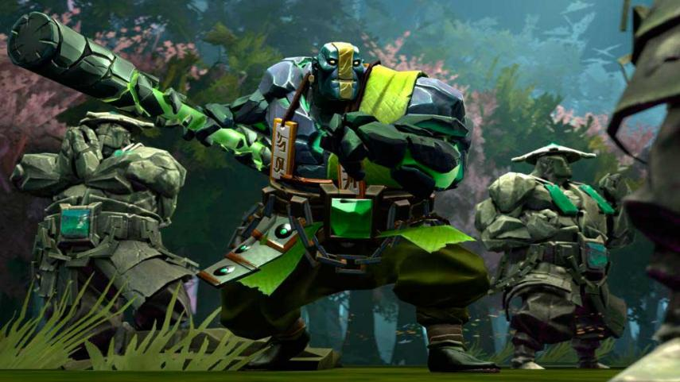

Earth Spirit
En lo más profundo de las Tierras Altas, entre sus peñascos y precipicios, existe un filón de jade sagrado al que renegaron los mineros de las tierras altas.
Habilidades
Golpe de Roca
Roca Rodante
Atracción Geomagnética
Magnetizar
